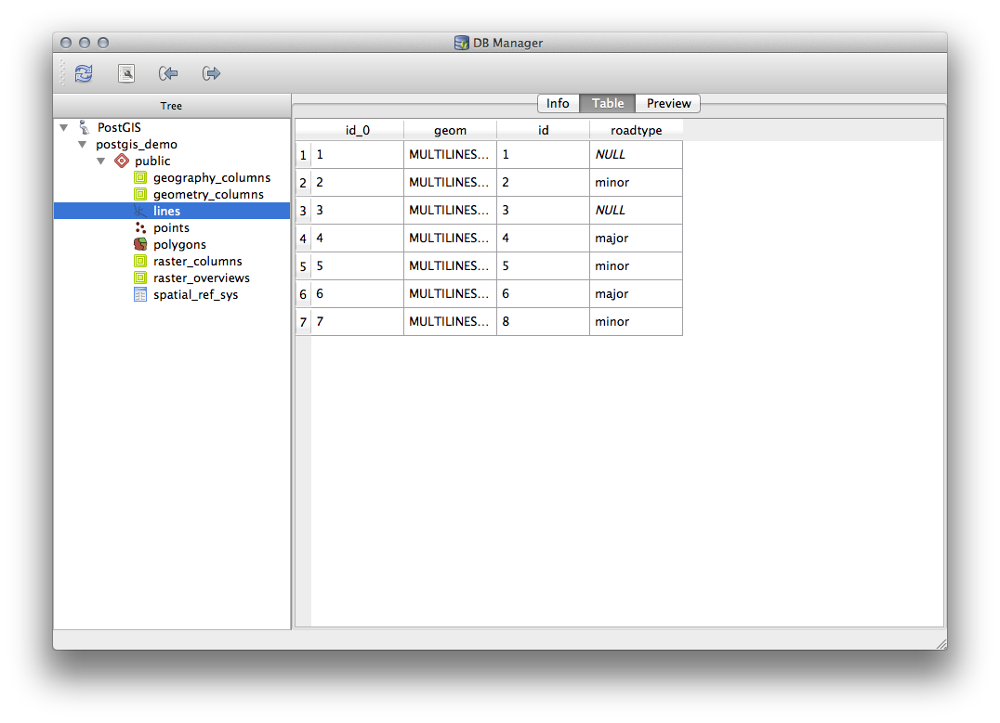
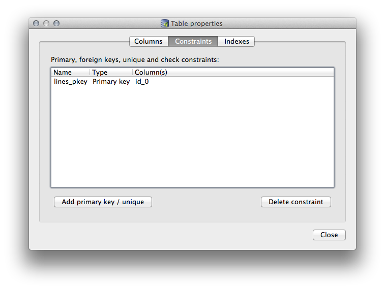
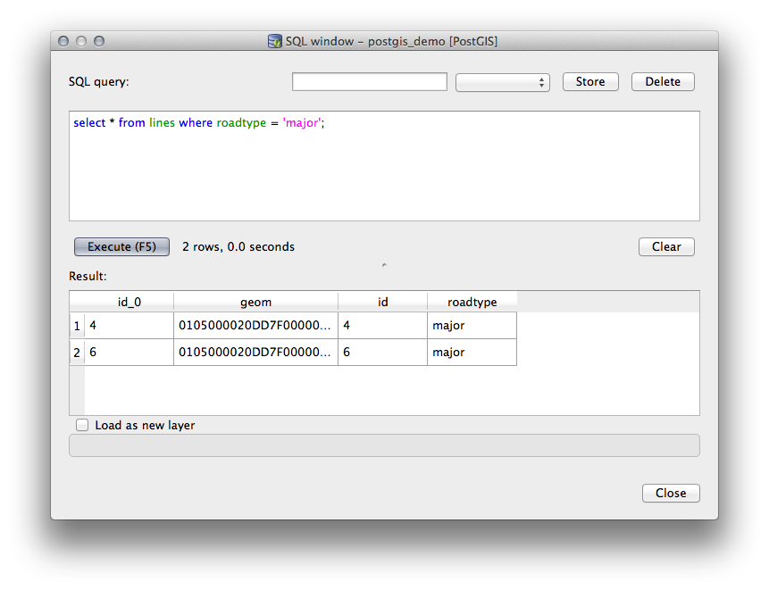
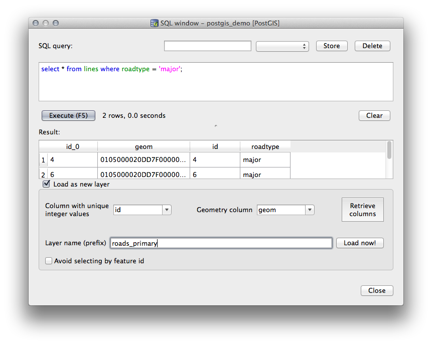
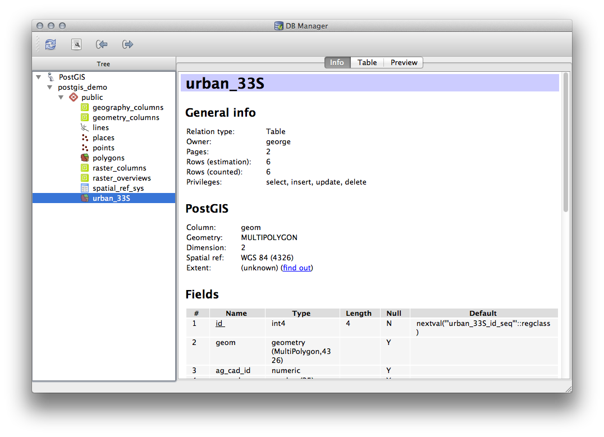

18.2. Lesson: Using DB Manager to work with Spatial Databases in QGIS
We have already seen how to perform many database operations with
QGIS as well as with other tools, but now it’s time to look at the DB
Manager tool which provides much of this same functionality as well
as more management oriented tools.
The goal for this lesson: To learn how to interact with spatial
databases using the QGIS DB Manager.
18.2.1. ★☆☆ Follow Along: Managing PostGIS Databases with DB Manager
You should first open the DB Manager interface by selecting
Database ► DB Manager ► DB Manager on the menu
or by selecting the DB Manager icon on the toolbar.
You should already see the previous connections we have configured
and be able to expand the myPG section and its public schema
to see the tables we have worked with in previous sections.
The first thing you may notice is that you can now see some metadata
about the Schemas contained in your database.
Schemas are a way of grouping data tables and other objects in a
PostgreSQL database and a container for permissions and other constraints.
Managing PostgreSQL schemas is beyond the scope of this manual, but
you can find more information about them in the
PostgreSQL documentation on Schemas.
You can use the DB Manager to create new Schemas, but will need to
use a tool like pgAdmin III or the command line interface to manage
them effectively.
DB Manager can also be used to manage the tables within your
database.
We have already looked at various ways to create and manage tables on
the command line, but now lets look at how to do this in DB Manager.
First, its useful to just look at a table’s metadata by clicking on
its name in tree and looking in the Info tab.
In this panel you can see the General Info about the
table as well the information that the PostGIS extension maintains
about the geometry and spatial reference system.
If you scroll down in the Info tab, you can see more
information about the Fields, Constraints
and Indexes for the table you are viewing.
Its also very useful to use DB Manager to simply look at the records
in the database in much the same way you might do this by viewing the
attribute table of a layer in the Layer Tree.
You can browse the data by selecting the Table tab.

There is also a Preview tab which will show you the layer
data in a map preview.
Right-clicking on a layer in the tree and clicking
Add to Canvas will add this layer to your map.
So far we have only been viewing the database its schemas and tables
and their metadata, but what if we wanted to alter the table to add
an additional column perhaps?
DB Manager allows you to do this directly.
Select the table you want to edit in the tree
Select Table ► Edit Table from the menu, to open
the Table Properties dialog.
You can use this dialog to Add Columns, Add geometry columns, edit
existing columns or to remove a column completely.
Using the Constraints tab, you can manage which fields
are used as the primary key or to drop existing constraints.

The Indexes tab can be used to add and delete both
spatial and normal indexes.
Now that we have gone through the process of working with existing
tables in our database, let’s use DB Manager to create a new table.
If it is not already open, open the DB Manager window, and expand
the tree until you see the list of tables already in your database.
From the menu select Table –> Create Table to bring up
the Create Table dialog.
Use the default Public schema and name the table places.
Add the id, place_name, and elevation fields as shown
below
Make sure the id field is set as the primary key.
Click the checkbox to Create geometry column and make
sure it is
set to a POINT type and leave it named geom and specify
4326 as the SRID.
Click the checkbox to Create spatial index and click
Create to create the table.
Dismiss the dialog letting you know that the table was created and
click Close to close the Create Table Dialog.
You can now inspect your table in the DB Manager and you will of
course find that there is no data in it.
From here you can Toggle Editing on the layer menu and
begin to add places to your table.
The DB Manager will also let you do some basic database
administration tasks.
It is certainly not a substitute for a more complete database
administration tool, but it does provide some functionality that you
can use to maintain your database.
Database tables can often become quite large and tables which are
being modified frequently can end up leaving around remnants of
records that are no longer needed by PostgreSQL.
The VACUUM command takes care of doing a kind of garbage collection
to compact and optional analyze your tables for better performance.
Let us take a look at how we can perform a VACUUM ANALYZE command
from within DB Manager.
Select one of your tables in the DB Manager Tree
Select Table ► Run Vacuum Analyze from the menu
PostgreSQL will now perform the operation.
Depending on how big your table is, this may take some time to
complete.
18.2.4. ★☆☆ Follow Along: Executing SQL Queries with DB Manager
DB Manager also provides a way for you to write queries against your
database tables and to view the results.
We have already seen this type of functionality in the
Browser panel, but lets look at it again here with DB
Manager.
Select the lines table in the tree.
Select the SQL window button in the DB Manager toolbar.
Compose the following SQL query in the space provided:
select*fromlineswhereroadtype='major';
Click the Execute (F5) button to run the query.
You should now see the records that match in the
Result panel.

Click the checkbox for Load as new layer to add the
results to your map.
Select the id column as the Column with unique
integer values and the geom column as the
Geometry column.
Enter roads_primary as the Layer name (prefix).
Click Load now! to load the results as a new layer
into your map.

The layers that matched your query are now displayed on your map.
You can of course use this query tool to execute any arbitrary SQL
command including many of the ones we looked at in previous modules
and sections.
18.2.5. Importing Data into a Database with DB Manager
We have already looked at how to import data into a spatial database
using command line tools, so now let’s learn how to use DB Manager to
do imports.
Click the Import layer/file button on the toolbar in
the DB Manager dialog.
Select the urban_33S.shp file from
exercise_data/projected_data as the input dataset
Click the Update Options button to pre-fill some of
the form values.
Make sure that the Create new table option is selected
Specify the Source SRID as 32722 and the
Target SRID as 4326
Enable the checkbox to Create Spatial Index
Click OK to perform the import
Dismiss the dialog letting you know that the import was successful
Click the Refresh button on the DB Manager Toolbar
You can now inspect the table in your database by clicking on it in
the Tree.
Verify that the data has been reprojected by checking that the
Spatial ref: is listed as WGS84(4326).

Right clicking on the table in the Tree and a selecting
Add to Canvas will add the table as a layer in your map.
18.2.6. Exporting Data from a Database with DB Manager
Of course DB Manager can also be used to export data from your spatial
databases, so lets take a look at how that is done.
Select the lines layer in the Tree and click the
Export to File button on the toolbar to open the
Export to vector file dialog.
Click the … button to select the
Output file and save the data to your
exercise_data directory as urban_4326.
Set the Target SRID as 4326.
Click OK to initialize the export.
Dismiss the dialog letting you know the export was successful and
close the DB Manager.
You can now inspect the shapefile you created with the Browser panel.
You have now seen how to use the DB Manager interface in QGIS to
manage your spatial databases, to execute SQL queries against your
data and how to import and export data.
 DB Manager icon on the toolbar.
DB Manager icon on the toolbar.